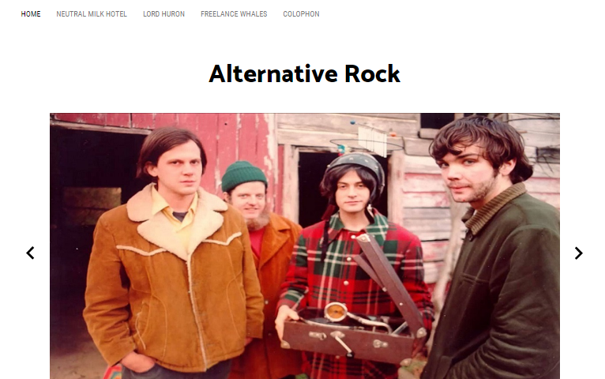
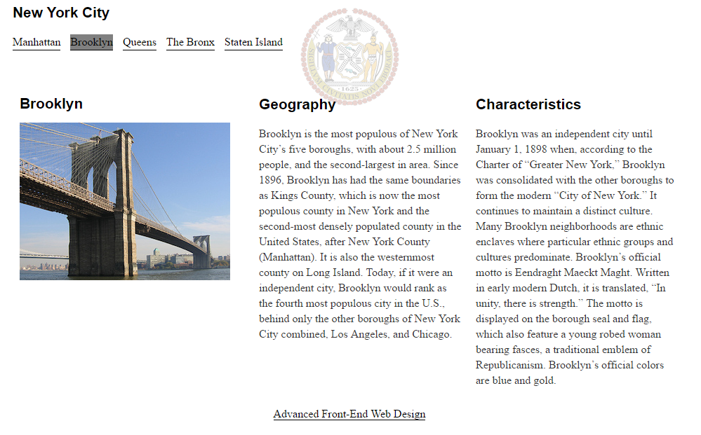

Portfolio
Alternative Bands Website
Visit Website
As a group, Theresa and her team members collaborated to design and implement a website on different Alternative Rock bands. It also uses a javascript function to feature a photo slideshow on the front page.
Customer Website
Visit Website
We were assigned a customer website to improve. Theresa specifically added the feature of a javascript implemented music player on each page that would play the respective artist's music.
About New York
Visit Website
As a lab for Advanced Web Design, Theresa was assigned to create an informationl webpage about the boroughs of New York City. It showcases a highlighted navigation bar which was created using a menu-highlighter javascript file.